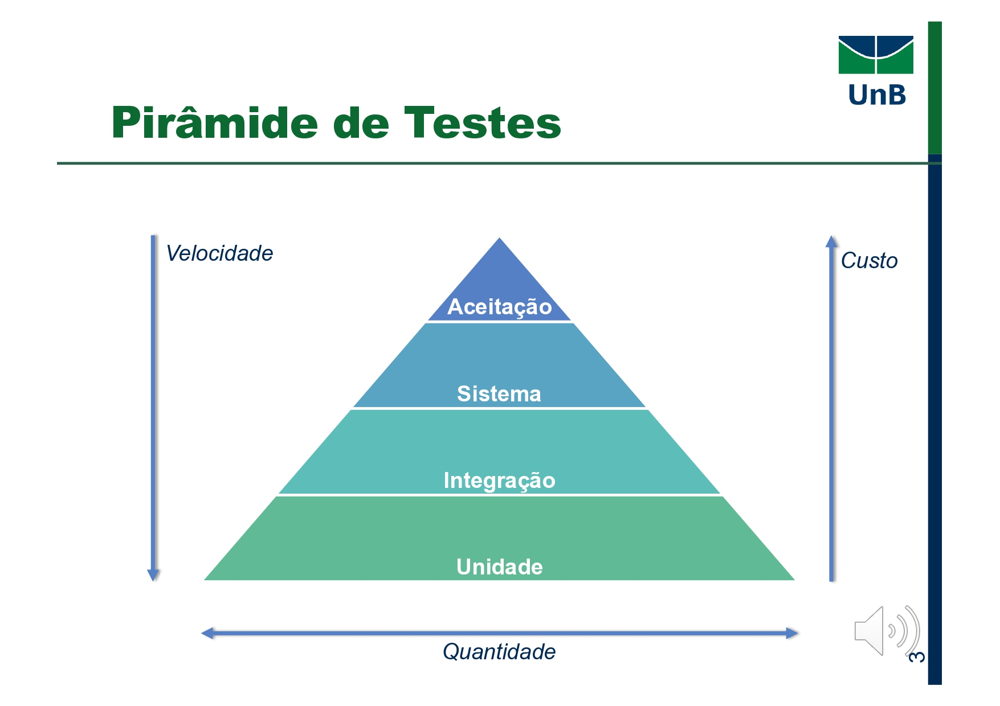

Teste de Unidade
3. Pirâmide de Testes
A Pirâmide de Testes ilustra como equilibrar velocidade, custo e cobertura ao estruturar sua suíte de testes (Meszaros, 2007):

| Nível | Quantidade de Testes | Custo por Teste | Velocidade de Execução | Exemplos de Ferramentas |
|---|---|---|---|---|
| Aceitação | Baixa | Alto | Muito Lenta | Cucumber, Robot Framework |
| Sistema | Média | Médio | Lenta | Selenium, TestComplete |
| Integração | Média–Alta | Baixo–Médio | Moderada | Pytest + Docker Compose, Postman |
| Unidade | Alta | Baixo | Muito Rápida | pytest, unittest, Jest |
- Unidade (base)
- O que: Testes de função/método isolado.
- Por que: Rápidos e baratos; detectam defeitos de lógica interna antes de integrar dependências.
- Integração (camada intermediária)
- O que: Testes de múltiplos módulos funcionando juntos (por exemplo, serviço + banco de dados).
- Por que: Verifica contratos/interfaces, detecta erros de comunicação e configuração.
- Sistema (última camada antes da aceitação)
- O que: Testes fim-a-fim que exercitam todo o sistema em ambiente real ou simulado.
- Por que: Confirma fluxo completo (UI → backend → DB), mas custa mais manter.
- Aceitação (topo)
- O que: Validação contra requisitos de negócio por meio de cenários escritos em linguagem natural.
- Por que: Garante que o software atenda às expectativas do usuário, mas demora para rodar.
Eixos
- Velocidade: decresce de unidades → aceitação.
- Custo: cresce de unidades → aceitação.
- Quantidade: cresce de aceitação → unidades.
4. Outros Formatos de Estratégia
A. The Testing Trophy
Desenvolvida por Kent C. Dodds para aplicações web modernas:
- Static: detecção de erros sem execução (ESLint, mypy).
- Unit: lógica interna (Jest, pytest).
- Integration: contratos entre módulos (Testing Library, pytest-docker).
- End to End: simulação completa de usuário (Cypress, Playwright).
Meta: Keep static and unit tests em larga quantidade, reduzindo gradualmente até E2E (Dodds, 2020).
B. Microservices Test Strategy
Abordagem do Spotify Labs para arquiteturas de microsserviços:
- Implementation Detail: validar lógica isolada de cada serviço (testes de unidade profundas).
- Integration: testar comunicação entre pares de serviços (contratos de API).
- Integrated: executar conjunto completo de microsserviços simulando produção (fluxos end-to-end).
Recomendação: minimizar testes de detalhe interno, focar em Integration e Integrated (Spotify Labs, 2019).
5. Níveis de Teste – Benefícios
- Evita redundância
- Cada nível foca em diferentes categorias de defeitos (Myers et al., 2012).
- Custo x Risco
- Detectar cedo (unidade) corrige barato; detectar tarde (aceitação) corrige caro.
- Escalabilidade
- Pequenos projetos podem parar em integração; projetos críticos devem chegar à aceitação.
6. Níveis de Teste – Considerações
- Não são sequenciais: escolha níveis conforme risco, orçamento e complexidade do projeto.
- Fatores a influenciar a estratégia:
- Grau de acoplamento e coesão do sistema.
- Frequência de mudanças nos componentes.
- Recursos de infraestrutura (tempo de build, ambientes de teste).
7. Diagrama de Correspondência de Níveis

8. Lista de Níveis de Teste
- Unidade – testar o menor bloco de código isoladamente.
- Integração – validar a interação entre módulos.
- Função – foco em funcionalidades discretas, similar a testes de sistema menores.
- Sistema – testes de ponta a ponta num ambiente completo.
- Aceitação – validação contra critérios de aceite do cliente.
9. Testes de Unidade
Definição (Myers, 2012):
Processo de testar funções, métodos, procedimentos, sub-rotinas ou subprogramas individualmente, garantindo que cada unidade isolada se comporte conforme a especificação.
- Objetivo: verificar o menor elemento testável de um software.
- Procedural: função ou procedimento.
- Orientado a objeto: método de classe.
- Responsável: geralmente o desenvolvedor.
- Enfoque: algoritmos e lógica de programação.
- Técnicas: tipicamente caixa-branca, complementada por caixa-preta.
Motivações:
- Gerenciar incrementalmente os elementos do teste.
- Facilitar a depuração (localização de defeitos).
- Permitir paralelismo na execução dos testes.
9.1. Ferramentas em Python
| Ferramenta | Características | Referência |
|---|---|---|
unittest |
Framework padrão, estilo xUnit. | Python Software Foundation (2024). |
pytest |
Sintaxe concisa, fixtures, parametrização e plugins. | pytest Documentation (2024). |
coverage.py |
Medição de cobertura de código. | Ned Batchelder (2024). |
9.2. Exemplo Simples: Função is_even
# utils.py
def is_even(n: int) -> bool:
"""
Retorna True se n for par, False caso contrário.
"""
return n % 2 == 0
9.2.1. Testes com pytest
# tests/test_utils.py
import pytest
from utils import is_even
@pytest.mark.parametrize("input,expected", [
(0, True),
(1, False),
(2, True),
(99, False),
])
def test_is_even(input, expected):
assert is_even(input) == expected
- Casos de teste:
0→True1→False2→True99→False
9.2.2. Teste Caixa-Branca (Cobertura de Decisão)
def test_is_even_branches():
# testa tanto o ramo True quanto o ramo False
assert is_even(4) is True
assert is_even(5) is False
- Com isso garantimos que ambas as saídas (
TrueeFalse) ocorram ao menos uma vez.
9.3. Critérios de Cobertura
| Critério | Descrição |
|---|---|
| Cobertura de decisões | Garante que n % 2 == 0 avalie True e False |
| Cobertura de instruções | Garante execução da única linha da função |
# Gerando relatório de cobertura
coverage run -m pytest && coverage report -m
Name Stmts Miss Cover
----------------------------------
utils.py 3 0 100%
12. Referências Bibliográficas
- Myers, G. J., Sandler, C., & Badgett, T. (2012). The Art of Software Testing. John Wiley & Sons.
- pytest Development Team. (2024). pytest documentation. Retrieved from https://docs.pytest.org/
- Ned Batchelder. (2024). coverage.py documentation. Retrieved from https://coverage.readthedocs.io/
- Meszaros, G. (2007). xUnit Test Patterns: Refactoring Test Code. Addison-Wesley.
- Dodds, K. C. (2020). The Testing Trophy.
- Spotify Labs. (2019). Microservices Test Strategy